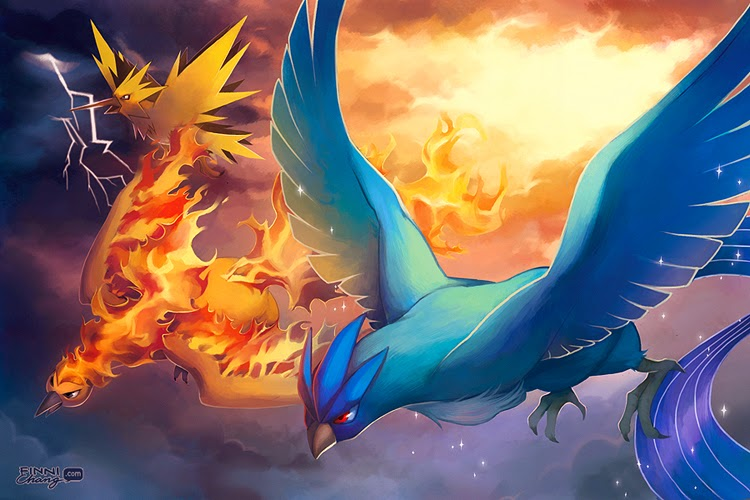

A Trindade Lendária de Kanto
Juntos, esses três Pokémon lendários formam a trindade de pássaros lendários de Kanto, representando os três elementos fundamentais: gelo ,eletricidade e fogo. Cada A captura de cada um desses Pokémon requer grande habilidade e paciência, pois eles não são apenas extremamente poderosos, mas também muito difíceis de encontrar. Os três cantos lendários se tornaram figuras centrais na mitologia Pokémon, esses Pokémon, com sua relação mítica e enigmática, continuaram a ser símbolos de grande relevância dentro da série, representando não apenas desafios poderosos, mas também as forças primordiais que regem o mundo de Pokémon .
Moltres,na mitologia de Kanto, Moltres representa a destruição e o renascimento. Sua aparência traz consigo uma mensagem de purificação e de mudança, visto que as chamas de Moltres não apenas queimaram, mas também regeneraram a terra que queimaram, promovendo o crescimento de novas formas de vida após a destruição.É um pássaro imponente com penas flamejantes que o envolvem. Ele tem uma plumagem dourada e vermelha, e suas asas são longas e esvoaçantes, com chamas que emanam de seu corpo. Seu bico e garras são refinados e ele tem uma postura altiva, refletindo seu status como um dos Pokémon lendário.

Articuno,na mitologia da região de Kanto, Articuno é considerado um ser celestial que personifica o frio e o inverno. Ele é reverenciado como uma entidade de pureza e serenidade, sendo visto como um símbolo de força tranquila e de controle sobre a natureza. Articuno é conhecido por sua habilidade de criar neve e cobrir vastas áreas com gelo, congelando o terreno à sua volta e o controlando. Articuno é um grande pássaro azul com longas penas e um aspecto elegante. Seu corpo é principalmente de um tom azulado, com detalhes brancos em suas asas e cauda, que são longos e finos, com penas que parecem feitas de gelo. Articuno também possui um bico refinado e uma crista na cabeça, o que reforça sua aparência imponente. Seus olhos são penetrantes. Sua habilidade única de controlar o gelo o torna uma das criaturas mais poderosas do mundo Pokémon. Ele é capaz de criar tempestades de neve e congelar tudo o que toca, podendo até transformar o ambiente ao seu redor em um vasto deserto congelado.

Zapdos,está envolto em mistérios e lendas que associam sua presença a grandes tempestades e desastres naturais. Ele é descrito como um ser que surge do céu durante fortes tempestades, quando os raios e trovões dominam a paisagem. A lenda de Zapdos fala sobre sua habilidade de controlar os céus e manipular as aparências elétricas, podendo causar relâmpagos massivos que iluminam o céu com sua intensidade. Frequentemente visto como um símbolo de liberdade e poder incontrolável, uma vez que sua conexão com as tempestades o torna impossível de ser dominado. Ele voa tempestade livremente pelos céus, criando ao seu redor e representando o espírito indomável da natureza. Zapdos é um grande pássaro amarelo com penas que lembra raios de eletricidade. Suas asas são longas e afiadas, com uma forma que parece uma mistura entre um pássaro e um raio em pleno voo. Ele possui garras afiadas e um bico pontiagudo, reforçando sua aparência assustadora e ameaçadora. O corpo de Zapdos emana um brilho elétrico, com faíscas e relâmpagos ocasionais percorrendo suas penas.